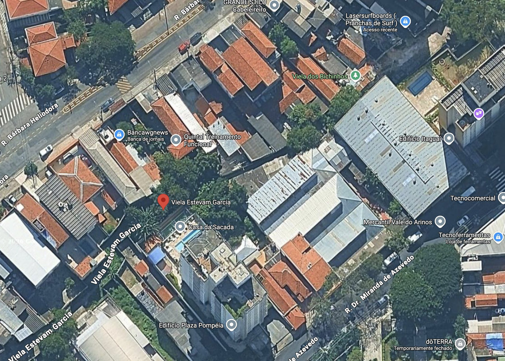

O que foi plantado, o que pegou e o que se perdeu na agrofloresta da Viela Estevam Garcia, na Pompéia, em São Paulo. Solo raso e pedregoso, sobre basalto, junto aos muros.
Em cooperação com o projeto @jardins_veredas
